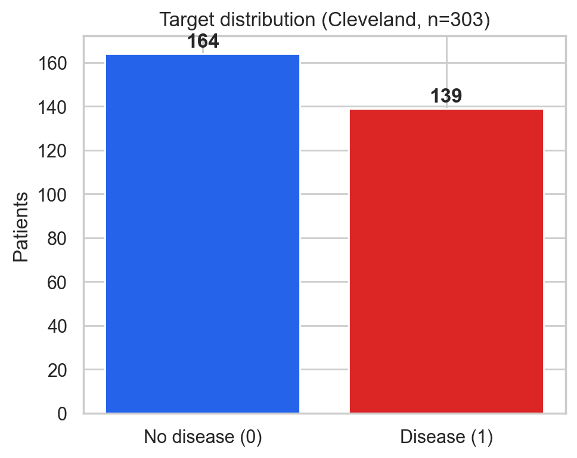
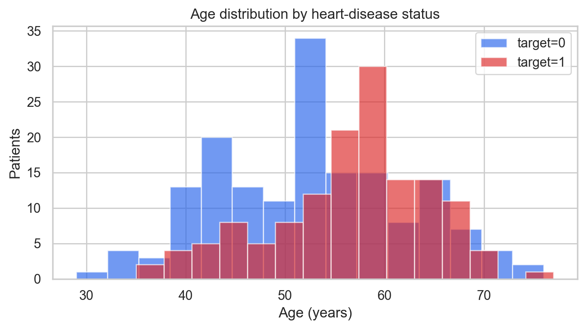
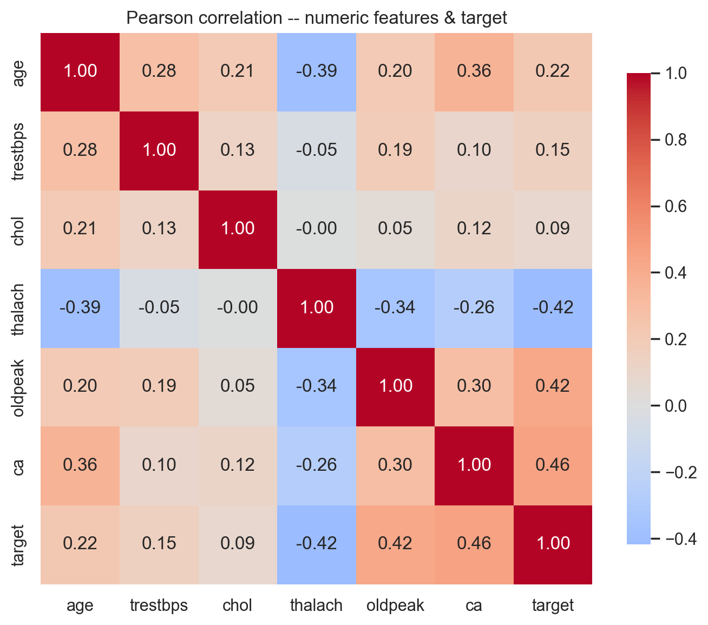
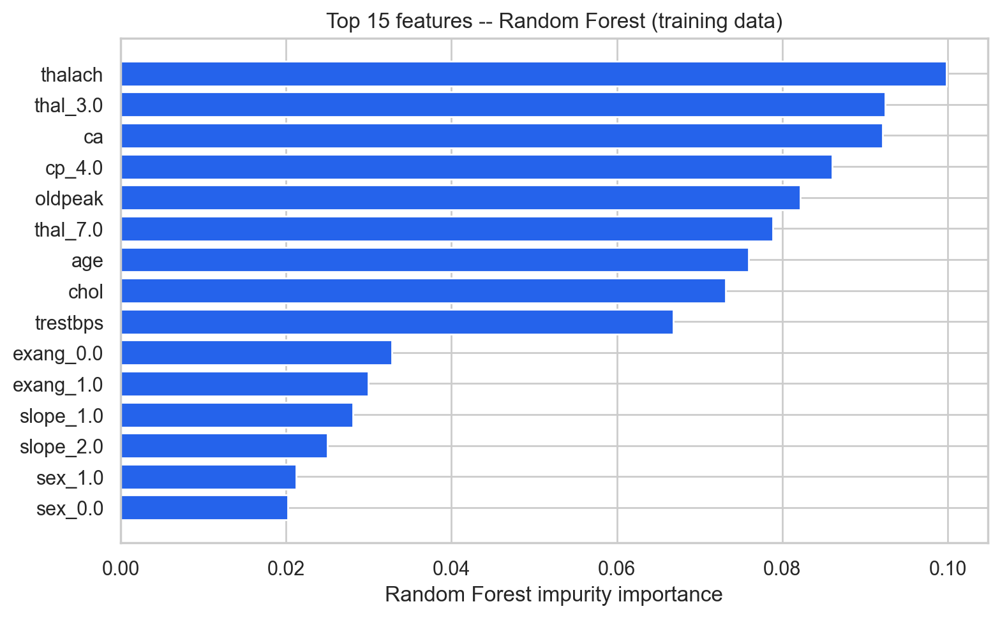
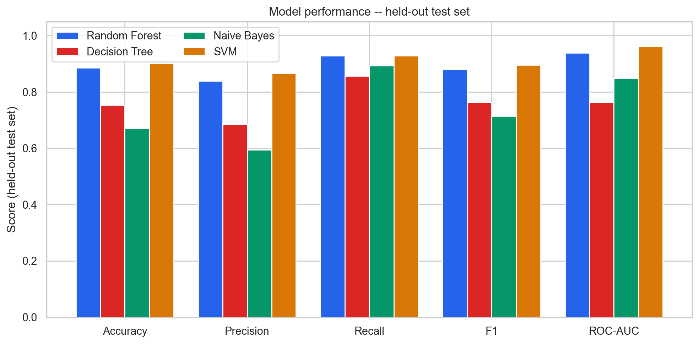
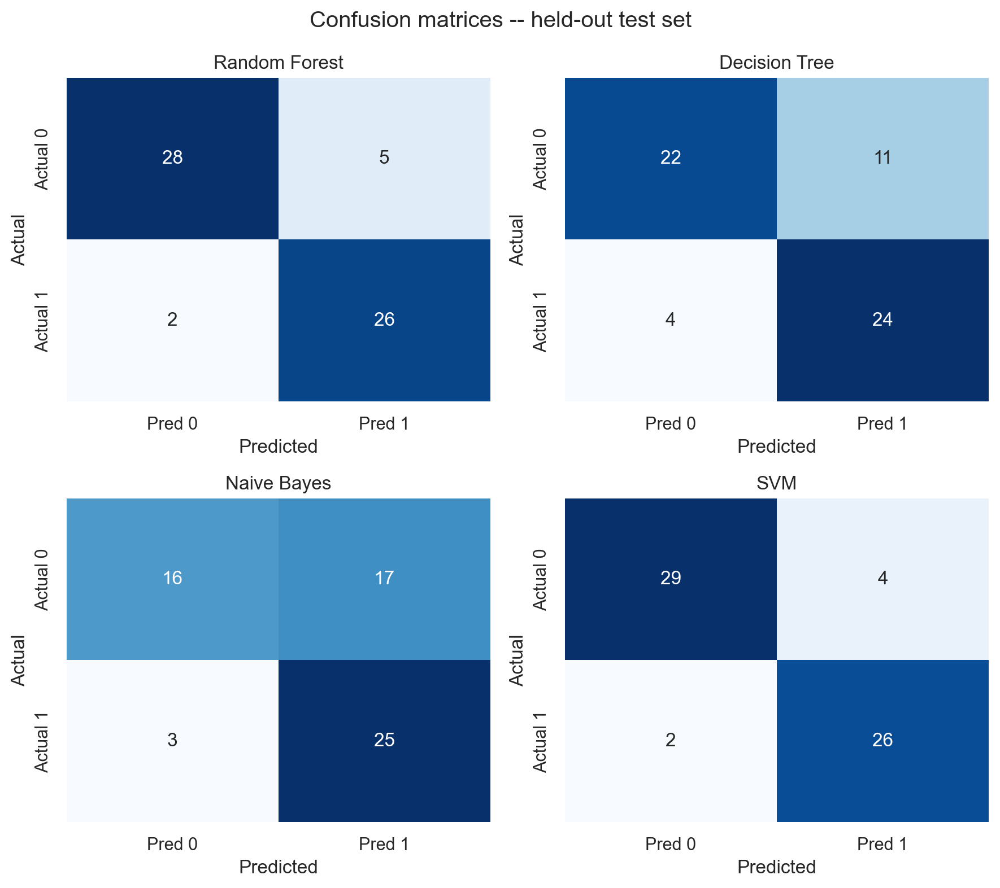
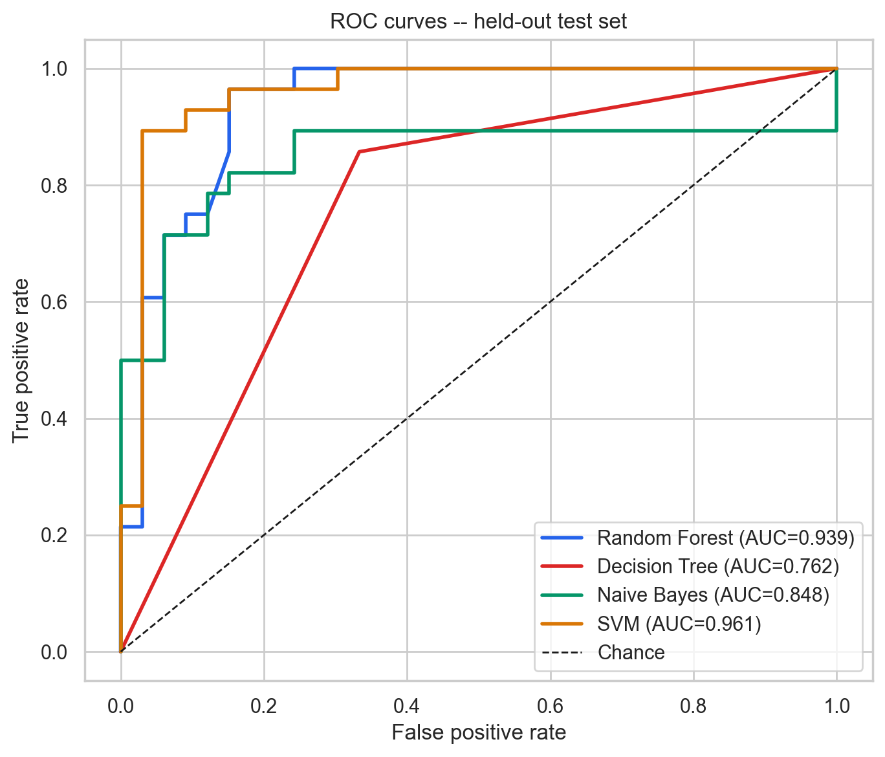

Independent project · Educational ML evaluation
Heart Disease Classification and Model Evaluation
A reproducible comparison of four classical classifiers — Random Forest, Decision Tree, Gaussian Naive Bayes, and Support Vector Machine (SVM) — on the public UCI Cleveland heart-disease dataset. The emphasis is methodological: leakage-safe preprocessing, training-only cross-validation, and a single held-out test evaluation.
This is an educational portfolio project. The results come from one held-out test split of 61 records. The models are not clinically validated diagnostic tools, no external validation was performed, and nothing here is suitable for a medical decision.
Overview
The dataset contains 303 records: 164 without disease and 139 with disease (45.9%). The target is the original num value collapsed to binary: 0 for no disease, and 1 for num 1–4, meaning more than 50% diameter narrowing in any major vessel in the source coding. Collapsing the grades discards disease-severity information.
Four fixed, pre-declared models were compared without tuning on the test set: Random Forest (300 trees), Decision Tree, Gaussian Naive Bayes, and SVM with an RBF kernel (C = 1.0, probability estimates enabled). SVM and Random Forest performed best on both training cross-validation and the held-out test set. With only 61 test records, differences of a few percentage points are within noise.
Dataset and attribution
The source is the UCI Machine Learning Repository, Heart Disease (ID 45), processed Cleveland file (processed.cleveland.data). License: CC BY 4.0 under UCI terms; attribution is required. DOI: 10.24432/C52P4X.
Citation: Janosi, A., Steinbrunn, W., Pfisterer, M., & Detrano, R. (1989). Heart Disease [Dataset]. UCI Machine Learning Repository. https://doi.org/10.24432/C52P4X
UCI states that patient names and social security numbers were removed from this public file. No patient-level records are published on this page. The outputs here are aggregates, model metrics, and figures only. The implementation code is MIT licensed (see the LICENSE file in the download). The dataset remains CC BY 4.0, so reuse of figures or results should credit both this project and the UCI dataset.
The 13 input features are age, sex, chest-pain type (cp), resting blood pressure (trestbps), cholesterol (chol), fasting blood sugar (fbs), resting ECG (restecg), maximum heart rate achieved (thalach), exercise-induced angina (exang), exercise ST depression (oldpeak), ST slope (slope), number of major vessels (ca), and thalassemia scan result (thal). Ages run from 29 to 77 years. In the file coding, sex has 97 records in one level and 206 in the other.
Exploratory analysis
The class balance is close to even: 164 records without disease and 139 with disease. Six cells are missing, marked “?” in the raw file: four in ca and two in thal. No exact duplicate rows were found. Missing values are imputed inside the preprocessing pipeline, so their handling is learned from training data only.
The age chart and correlation heatmap are descriptive views of this cohort. They do not show causal relationships. In the numeric-feature heatmap, the strongest Pearson correlations with the binary target are number of major vessels (0.46), exercise ST depression (0.42), and maximum heart rate achieved (−0.42).
Preprocessing and methodology
- Exact duplicate rows, checked on features plus target, were dropped before splitting. None were found, and train/test overlap is asserted as zero at run time.
- The split is stratified 80/20 (242 training, 61 test), with
random_state=42. - Numeric features use median imputation and standard scaling. Categorical features use most-frequent imputation and one-hot encoding.
- Every preprocessing statistic is fit only inside the training pipeline, or inside each cross-validation training fold.
- Model ranking uses stratified five-fold cross-validation on the training data only. The held-out test set is used for one final evaluation and was never used for tuning. No hyperparameter tuning was performed.
- Random Forest feature importance is impurity-based and computed on training data. It is associational, not causal or clinical evidence.
Training-only five-fold cross-validation means were: SVM accuracy 0.831 and ROC-AUC 0.885; Random Forest accuracy 0.810 and ROC-AUC 0.890; Naive Bayes accuracy 0.723 and ROC-AUC 0.871; Decision Tree accuracy 0.702 and ROC-AUC 0.700.
Held-out test results
The test set has 61 records: 33 without disease and 28 with disease. These are results from a single held-out split. They are not an external validation and they do not establish clinical performance.
| Model | Accuracy | Precision | Recall | F1 | ROC-AUC | TN | FP | FN | TP |
|---|---|---|---|---|---|---|---|---|---|
| SVM | 90.2% | 0.867 | 0.929 | 0.897 | 0.961 | 29 | 4 | 2 | 26 |
| Random Forest | 88.5% | 0.839 | 0.929 | 0.881 | 0.939 | 28 | 5 | 2 | 26 |
| Decision Tree | 75.4% | 0.686 | 0.857 | 0.762 | 0.762 | 22 | 11 | 4 | 24 |
| Naive Bayes | 67.2% | 0.595 | 0.893 | 0.714 | 0.848 | 16 | 17 | 3 | 25 |
SVM has the highest accuracy and ROC-AUC on this split. Random Forest is close behind, with the same recall. Naive Bayes also has high recall (0.893), but at a cost: 17 of the 33 records without disease are classified as disease. That trade-off is visible in the confusion matrices.
The most influential Random Forest variables are maximum heart rate achieved (thalach, 0.100), thalassemia scan result thal = 3.0 (0.092), number of major vessels (ca, 0.092), asymptomatic chest-pain type cp = 4.0 (0.086), and exercise ST depression (oldpeak, 0.082). These are training-data impurity importances. They are not causal effects and they are not clinical evidence.
Visualizations
These seven figures were generated by the analysis from the 303-record UCI Cleveland file. They show aggregates and model scores only.



ca (0.46), oldpeak (0.42), and thalach (−0.42). Correlation is not causation.
thalach) ranks first, followed by thal = 3.0, ca, cp = 4.0, and oldpeak. Impurity importance is associational.


Limitations and conclusions
- Single-centre Cleveland cohort collected in the 1980s, with 303 records. It is not representative of modern or diverse populations.
- The held-out test set has 61 records, so test metrics have wide uncertainty. A few records would change the percentages.
- Collapsing the original disease grades 1–4 into one class discards severity information.
- The angiographic label and 1980s measurement practices may not match current clinical definitions or devices.
- No external validation, calibration assessment, fairness or subgroup analysis, or prospective evaluation was performed.
- The missing-data mechanism for
caandthalis unknown. Those values are imputed, not observed. - Impurity-based feature importance is biased toward high-cardinality features and is not causal.
Within those limits, the project shows a complete, test-covered evaluation: the dataset is checked before splitting, preprocessing is fit only on training data, models are ranked with training cross-validation, and the test set is used once. SVM and Random Forest score highest on this split. That is a statement about this small historical dataset, not evidence for clinical use.
The downloadable archive contains the reproducible Python implementation, tests, requirements, documentation, figures, and machine-readable results. It excludes the raw UCI data file; the runner downloads it from UCI. The code is MIT licensed. The dataset is CC BY 4.0, credited above.